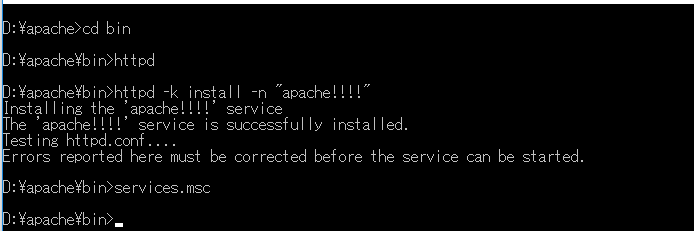

[Window] Apacheをインストール方法、サービスに登録する方法。
こんにちは。明月です。
ウェブサーバということで代表的なミドルウェアは「apache」と「IIS」があります。
「IIS」の場合はWindowサーバの専用のウェブサーバです。IISで使えるプログラム言語は「ASP」と「ASP.net」があります。追加モジュールをインストールすると「PHP」や「java」も出来ないことではないですが、普通で使わないです。
「apache」の場合はWindowサーバやLinuxサーバで別にOSの関係なくて運用できるウェブサーバです。「apache」の場合はアプリサーバではないので「apache」ままでは静的ウェブページと「perl」、「python」だけを使えますが、「tomcat」や「php」を拡張すると「java」や「php」まで使えます。
link - https://www.apache.org

実は上の公式ホームページでは「apache」サーバをダウンロードができません。いや、正確にいうとコンパイル前のソースがあるのでダウンロードしてもコンパイルをしなければならないです。
その手続きが簡単ではないですね。
それでコンパイルされたファイルをダウンロードしなければならないですが、それは別のアドレスで提供しています。
link - https://www.apachelounge.com/download/

この間まではバージョン2.2も提供しましたが、もう、提供しないらしいですね。それなら「2.4」バージョンをダウンロードしましょう。
ダウンロードして適当なところで解凍しましょう。

そして「conf」フォルダの中で「httpd.conf」ファイルがありますが、メモ帳で開きます。
その中で「server root」を変更しなければならないです。

上の37行目で「ServerRoot」が「C:\Apache24」で設定されていますね。
私の場合はDドライブでインストールしましたので、「D:\Apache」で設定しました。
2.2バージョンでは置換子がなかったので修正する項目が多かったが、2.4バージョンは置換子(Define)があるのでそこだけ修正すれば良いですね。
コンソールに当該なディレクトリに移動して「bin」フォルダの「httpd」を実行しましょう。
後、ブラウザに「localhost」を打って接続しましょう。
「It's work」という文言が出ればきちんとインストールがされていることです。
これから「apache」を「Window service」に同録しましょう。
「apache」をサービスに同録する方法では「httpd」のコマンドで「-k」オプションを与えると登録できます。
httpd -k install -n "サービスの名"
※もし登録中で上のメッセージではなく、エラーが発生する場合は管理者モードですると出来ます。
これからサービス設定に行きます。コマンド名は「service.msc」です。

「apache」を起動しましょう。
また、ブラウザで「localhost」を打って接続しましょう。
「It's work」が出れば、ちゃんと同録して起動されますね。
これからは「Window service」から「apache」サービスを解除しましょう。
httpd -k uninstall -n "サービス名"

逆に「install」のオプションを「uninstall」に変わるとよいです。参考に「uninstall」だってサービス名を入力しなければ、エラーになります。

※もしサービスで無くならなく、そのままあればサービス停止してサービスウィンドウを閉じて再起動するとなくなります。
- [Window] Apacheをインストール方法、サービスに登録する方法。2019/10/18 07:36:51
- [Window] WindowでExplorerのContext menuを修正する方法。2019/07/01 01:42:41
- [Window] Apacheをインストール方法、サービスに登録する方法。2019/10/18 07:36:51
- [Javaスタディ- 52] Java servletでインスタンスを初期する方法2019/10/17 07:15:48
- [Javaスタディ- 51] Spring web frameworkで発生する文字化けのEncoding設定2019/10/16 07:32:55
- [Javaスタディ- 50] Web Spring frameworkでfilter設定2019/10/15 20:12:35
- [Javaスタディ- 49] Web serviceのweb.xmlでエラーページ設定2019/10/14 20:13:44
- [Javaスタディ- 48] JPAのDAOをFactoryパターンで管理する方法2019/10/13 22:55:52
- [Java スタディ - 47] JPAのSpring frameworkで依存性注入する方法2019/10/13 00:40:08
- [Java スタディ - 46] JPAでDAOを生成する方法2019/10/11 07:30:14
- [Java スタディ - 45] JPAでトランザクションの使用方法とオブサーバーパターンで共通トランザクション関数を作り方2019/10/10 07:29:43
- [Java スタディ - 44] JPAのQuery を作り方2019/10/09 07:34:08
- [Java スタディ - 43] JPAのEntityクラス設定(Cascade, fetch)2019/10/08 07:43:33
- [Java スタディ - 42] JPAでpersistance.xml設定とentityクラス設定(@GeneratedValue設定)2019/10/07 07:38:13
- [Java スタディ - 41] EclipseでJPAフレームワーク設定する方法2019/10/04 19:24:43
- [Java スタディ - 40] Web spring frameworkのJSPで使う言語 JSTL - XML2019/10/03 20:02:06
- [Java スタディ - 39] Web spring frameworkのJSPで使う言語 JSTL - 関数、データベース2019/10/02 21:00:22